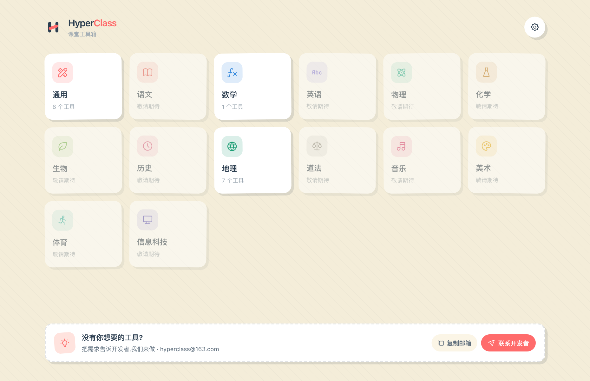
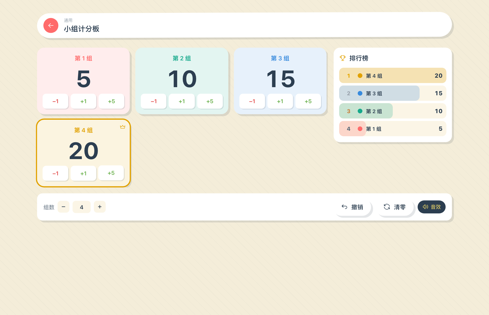
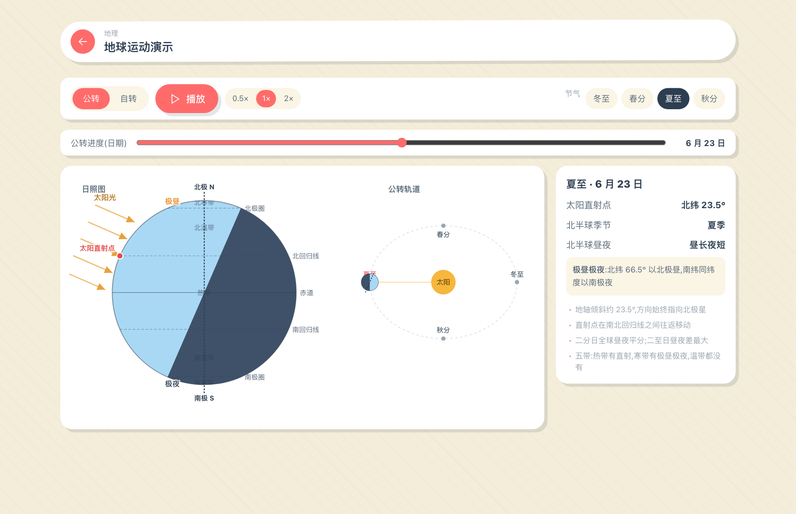
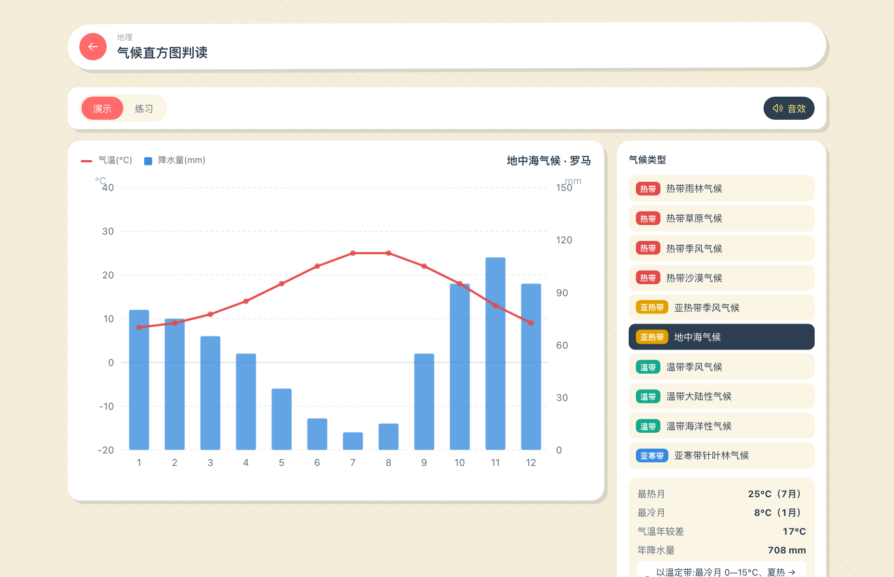
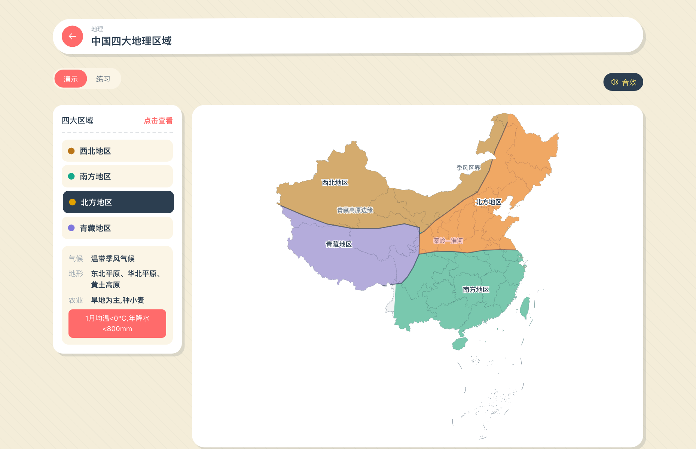
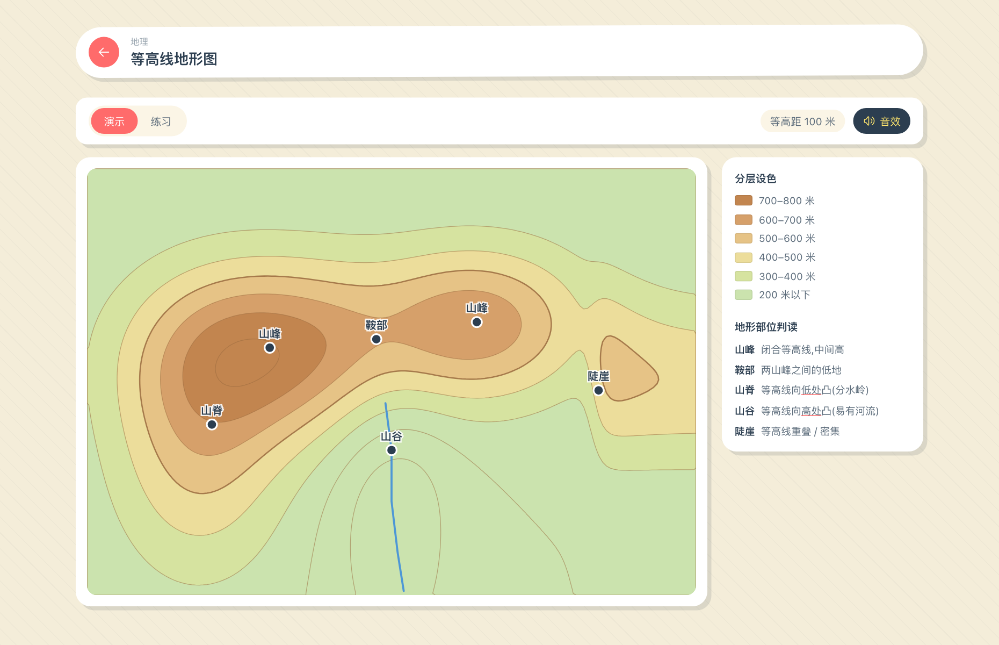
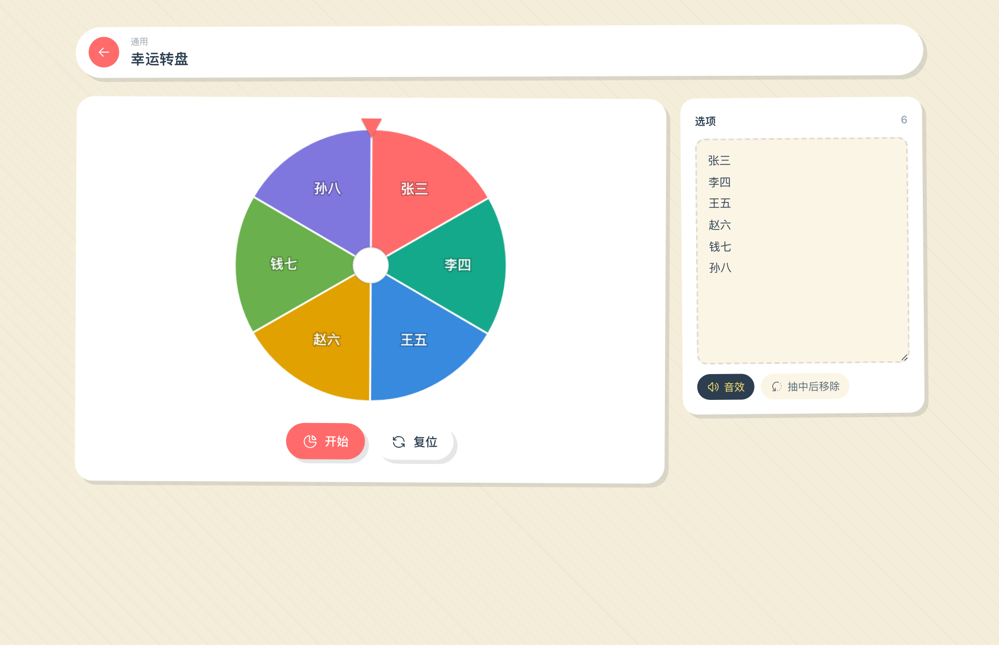

🖥️
大屏友好
大字号、强反馈、动画 + 音效，坐在最后一排也看得清。学生上台点一点就会用。
随机点名、小组计分、地理演练、函数图像…… 16 个为大屏课堂打磨的互动工具。老师演示讲解，学生上台动手，每个工具都带动画、音效与练习批改。

不是把功能堆上去就完事 —— 每个工具都讲究多种输入输出、动画、音效、过程感与人性化交互。
大字号、强反馈、动画 + 音效，坐在最后一排也看得清。学生上台点一点就会用。
很多工具既能「老师演示讲解」，又能「出题让学生练习」，作答后自动批改；练习态不泄露答案颜色，杜绝看色作弊。
地理与数学在物理细节上经得起推敲 —— 太阳直射点、晨昏线、极昼极夜、等高线判读，可直接当板书。
同一套代码，可作为桌面软件、网页、浏览器扩展使用。装到老师机，离线也能上课。
覆盖通用 / 地理 / 数学，下面挑几个看看实际样子。






选择你的系统，到 GitHub Releases 下载安装包。安装包暂未签名，首次打开如被拦截：macOS 右键「打开」，Windows 选「更多信息 → 仍要运行」。
由 GitHub Actions 自动为四个平台构建。